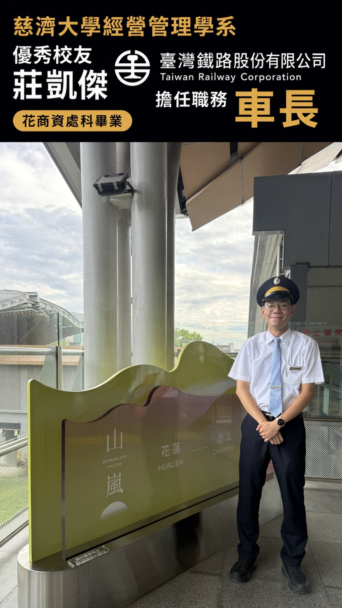
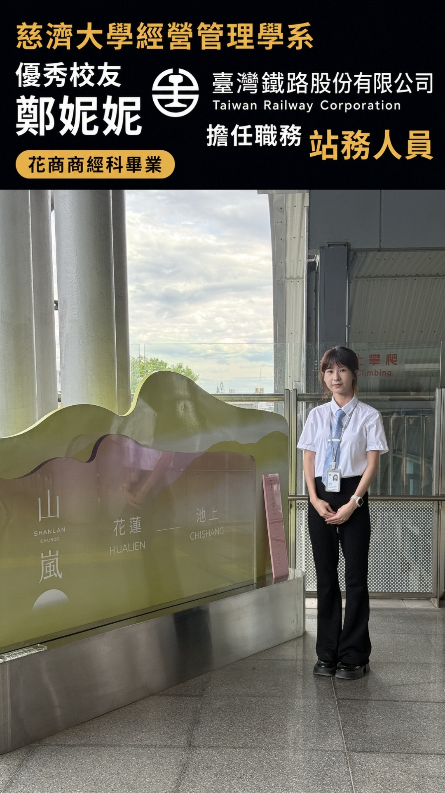

首頁 / 師生專區 / 系友專區
ALUMNI CONNECTIONS
連結系友活動、學習與職涯故事，延續系友與學系之間的交流及支持。
活動公告與相聚紀錄。
呈現系友畢業背景與職涯發展。
系友聯繫窗口與相關服務待提供。
分享系友的畢業背景與職涯現況，呈現經營管理系友多元的職涯發展。

畢業背景：花商資處科畢業
服務單位：臺灣鐵路股份有限公司
擔任職務：車長

畢業背景：花商商經科畢業
擔任職務：站務人員